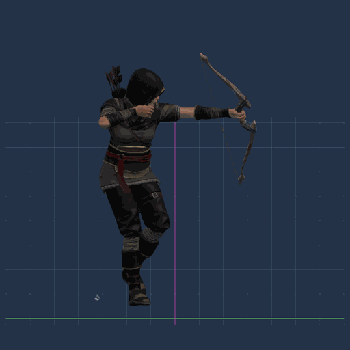
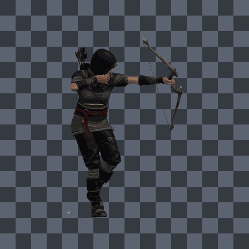
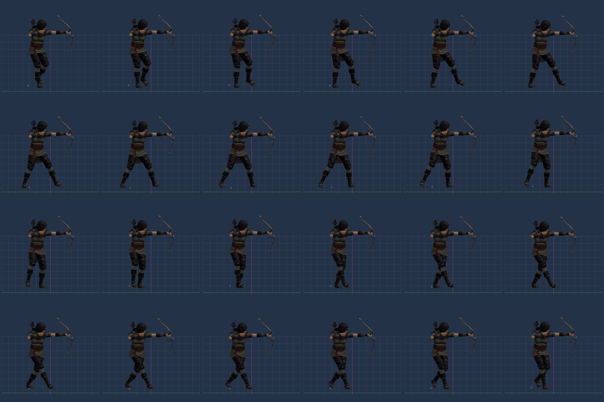
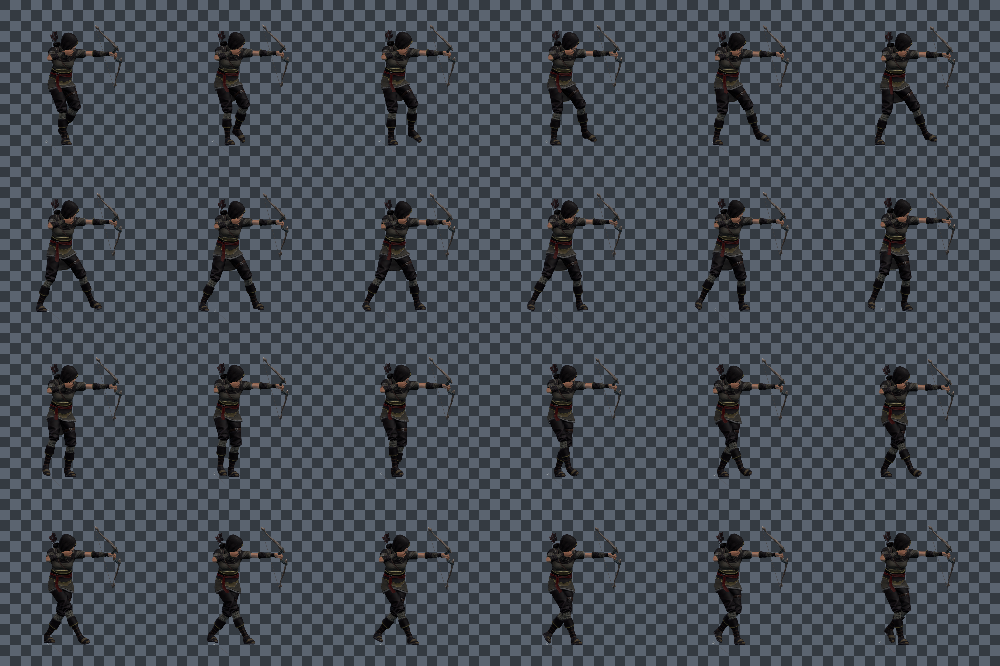

Erika Archer Aim Walk - 24 Frame Textured Test
Same 24 fps motion as the mannequin preview, now dressed with the FBX archer art/textures. Preview only, not integrated into the game.
Transparent PNG frames are in frames-transparent/. The checker GIF below is only to make the alpha easy to see on a phone.
Slow GIF With Guides

Transparent Frames Preview Over Checkerboard

Guide Sheet

Transparent Sheet Over Checkerboard
